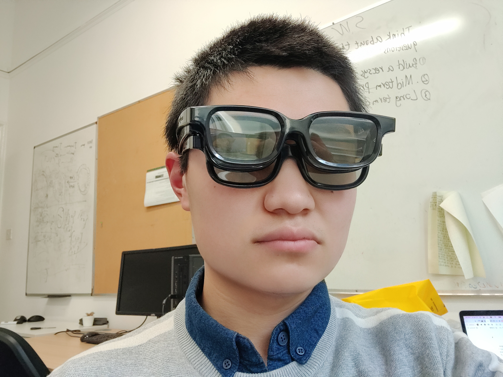
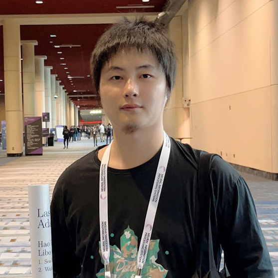

Organizers
General Chair
|
Renmin University |
Nanjing University |
Shandong University |
||||||||||||||||||||||||||||||||||||||||||||||||||||||||||||||||||||||||
|
Tsinghua University |
University of Glasgow |
Tsinghua University |
Program Chair
|
Xiamen University |
Beijing University of Posts and Telecommunications |

University of Aberdeen |
University of Sheffield |
Fuzhou University |
||||||||||||||||||||||||||||||||||||||||||||||||||||||||||||||||||||||||||||||||||||||||||||||||||||||||||||||||||||||||
| 
National University of Singapore |
Singapore Management University |
University of Auckland |
National University of Singapore |
University of Science and Technology |
Publicity Chair
|
Zhejiang University |